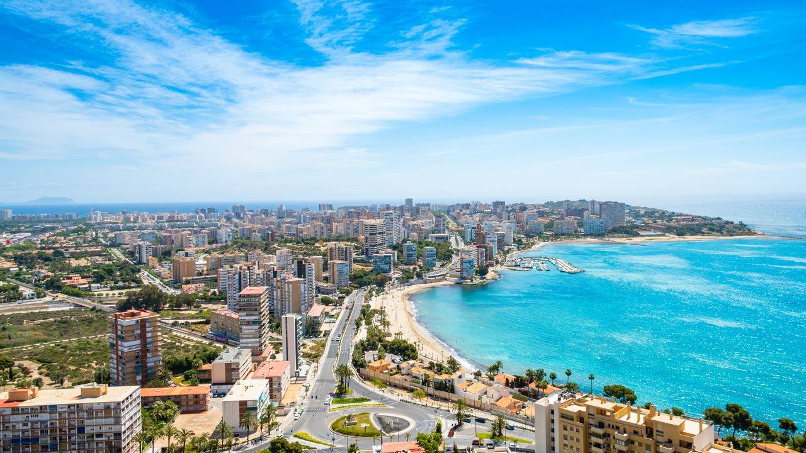
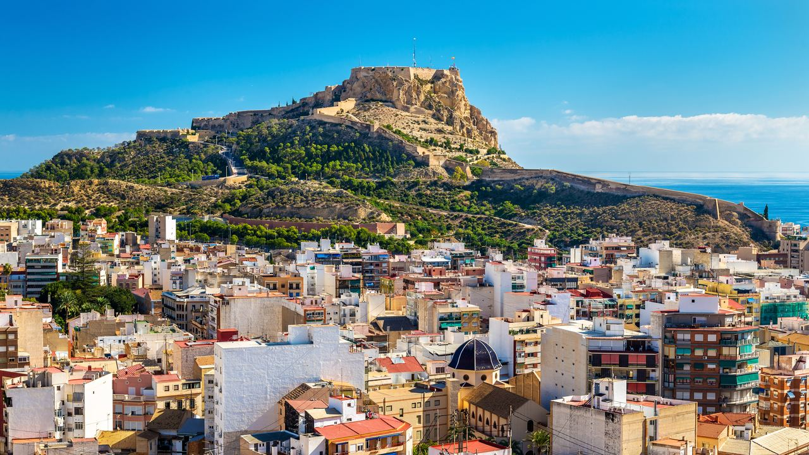
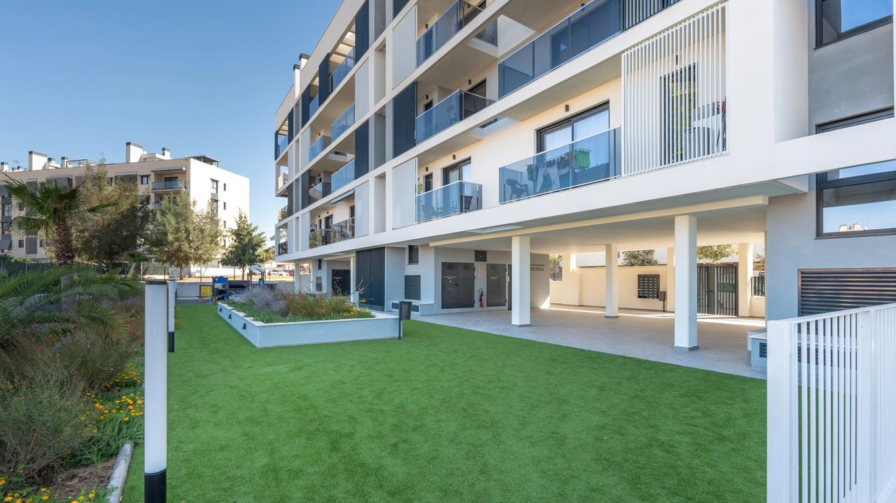
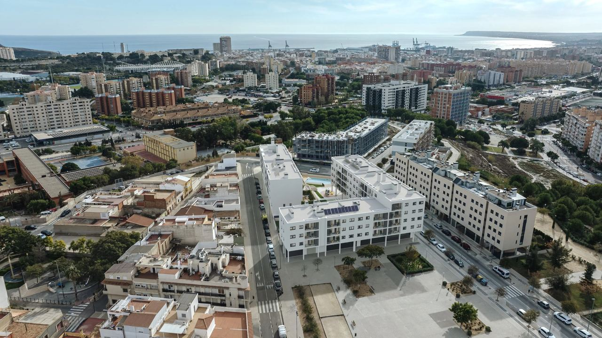

Places · Costa Blanca
Alicante – Lifestyle, Property Prices and Who Buys Here
 By Lucyna Gacek · · updated · 3 min read
By Lucyna Gacek · · updated · 3 min read

In short: Alicante is a real city of about 360,000 people with beaches, a port, universities, hospitals and an international airport 20 minutes away. In September 2026 asking prices averaged about €2,770 per m² (idealista), up 7.8% in a year, and rents about €13.9 per m² a month. Demand comes from local families as well as foreign buyers, so the market is less seasonal than in resort towns. Playa de San Juan and Cabo de las Huertas are the most sought-after areas.
Alicante is the capital of its province and very different from a typical holiday resort. It has year-round life, a job market, universities, a busy port and top hospitals, with beaches right in the city. For buyers that means a stable market and homes that are easy to rent and resell. Here is what to expect in 2026.
City life by the sea

Alicante has about 360,000 residents and the feel of a real Spanish city. Offices, shops, markets and cultural life run all year. The EU's intellectual property office (EUIPO) and a large university bring many international professionals and students.
The sea is part of daily life. Postiguet beach is a few steps from the old town, the palm-lined Explanada de España links the centre with the marina, and the long Playa de San Juan is reached by tram. The TRAM also runs north along the coast to El Campello, Benidorm and Dénia, and the airport is about 20 minutes from the centre.
Property prices in 2026

Two reference figures for Alicante city:
- Asking prices (idealista, September 2026): about €2,770 per m², up 7.8% in a year.
- Valuations of completed homes (Tinsa, Q3 2026): about €2,120 per m², up 14.7% in a year.
Asking prices are what sellers advertise; valuations reflect what banks appraise. Both show steady growth. New-build apartments usually start at around €300,000–350,000, while sea-view homes in Playa de San Juan or Cabo de las Huertas cost much more. Rents averaged about €13.9 per m² a month in September 2026, so a 70 m² flat lets for around €950 a month.
Alicante is dearer than the resort towns of the southern Costa Blanca, but still far cheaper than Madrid, Barcelona or Málaga. Browse our current properties for sale in Alicante.
Who buys in Alicante?
Unlike most coastal towns, a large share of buyers are Spanish and buy to live here. Alongside them:
- professionals and remote workers who want a city with an airport and good schools,
- families planning to move permanently,
- foreigners who already live on the coast and want city life,
- investors focused on long-term rentals for students and workers.
This mix keeps the market liquid and less sensitive to the holiday season. To compare with a resort market, see our article on Torrevieja.
Districts at a glance

- Centro and Ensanche Diputación: central, walkable, close to shops, the market and transport.
- Benalúa: traditional and popular with locals and tenants.
- Vistahermosa: higher-standard residential developments and private schools.
- Cabo de las Huertas: prestigious coastal area with villas and coves.
- Playa de San Juan: long beach, modern apartments with pools, very popular with families.
Schools, health care and parks
Alicante has international schools including the European School of Alicante, King's College Alicante, the British School of Alicante and the French Lycée, plus public and concertado schools. Public health care is centred on the Hospital General Universitario Dr. Balmis and Sant Joan Hospital, with several private hospitals. Green spaces include the Palmeral park, the slopes of Mount Benacantil below the castle and the new Parque Central planned on the old railway land.
Where the city is heading
Alicante is following a long-term plan: the Parque Central, upgrades to the port and the seafront, and better public transport. Rather than sudden price jumps, the city offers steady growth and low risk. For long-term buyers and those who want to live here all year, that is often the most important point.
Frequently asked questions
How much does a flat cost in Alicante in 2026?
Asking prices averaged about €2,770 per m² in September 2026. A new-build apartment typically starts at around €300,000–350,000.
What are the best areas to live in Alicante?
Playa de San Juan and Cabo de las Huertas for the beach, Centro and Ensanche Diputación for city life, and Vistahermosa for families.
Is Alicante a good place to invest in property?
For long-term rentals, yes. Demand comes from students, workers and families all year, and prices have risen steadily without the swings of resort towns.
How far is Alicante airport from the city?
About 12 km, roughly 20 minutes by car or bus.
A city that works all year
Alicante is not a resort, and that is its strength: real city life, the sea on your doorstep and a stable property market. If you would like to compare districts or see what is available, contact us for honest advice that fits your plans.
Sources: idealista – sale price report Alicante (September 2026) · Tinsa – house prices in Alicante (Q3 2026)